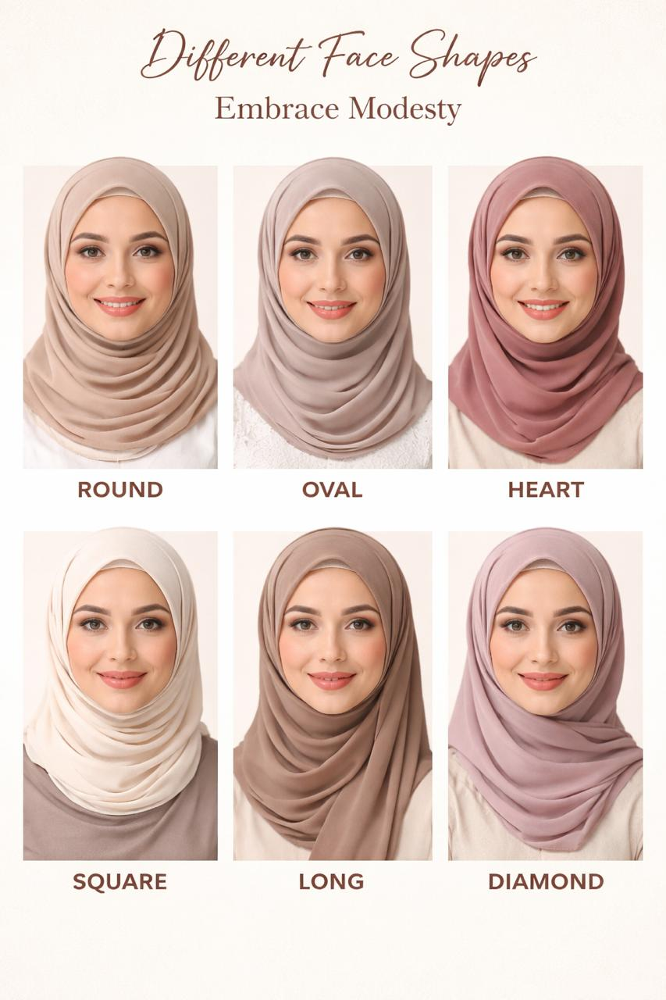
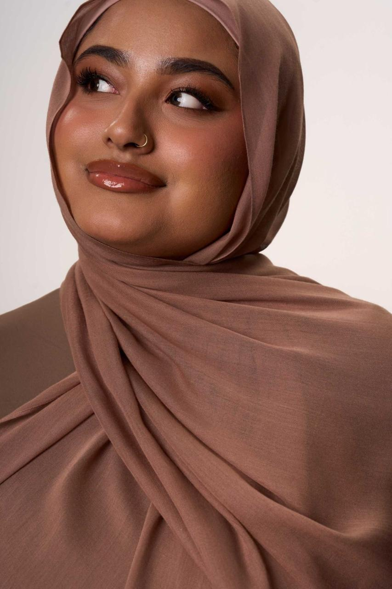
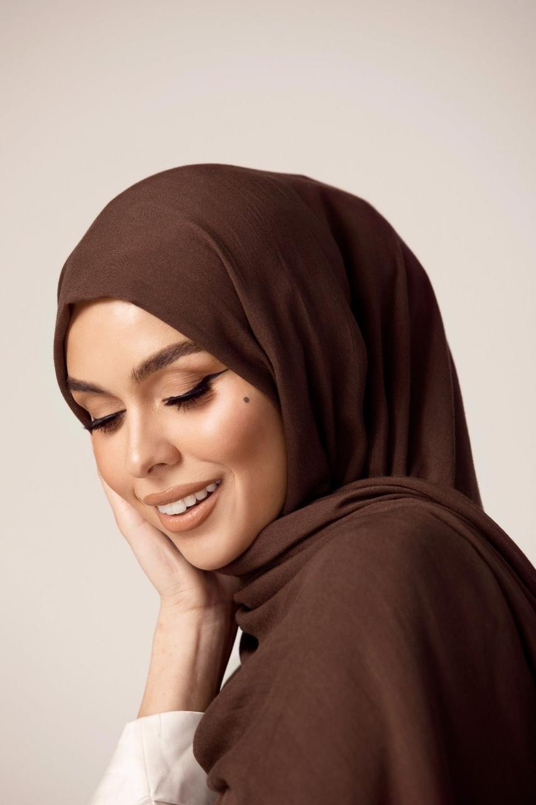

6 Easy Hijab Hacks Simple and practical hijab styling hacks every modest fashion lover should know. Read More →
 Face Shapes Learn how different hijab styles complement different face shapes. Read More →
  Colour Theory Discover the art of color coordination for your modest wardrobe. Read More →